Духовенство
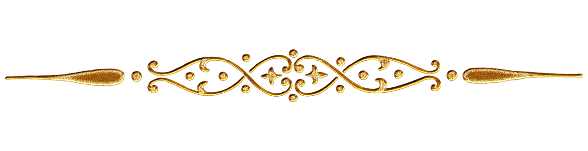
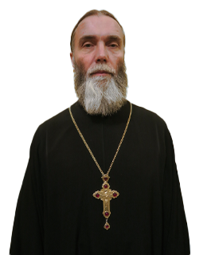
Благочинный Протоиерей
3-его благочиния г. Обнинска Сергий Вишняков
Настоятель храма в честь мучениц Веры, Надежды, Любови и матери их Софии
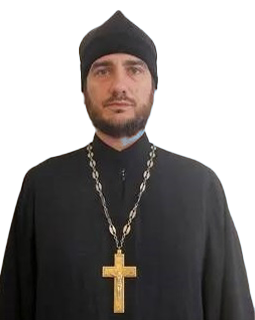
Иерей
Игорь Горня
Настоятель Храма в честь Рождества Христова
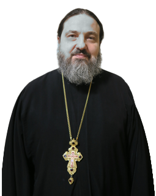
Протоиерей
Павел Синицын
Настоятель Храма Святителя Тихона
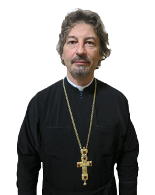
Протоиерей
Алексий Поляков
Настоятель Храма в честь свв. блгв. кнн. Бориса и Глеба
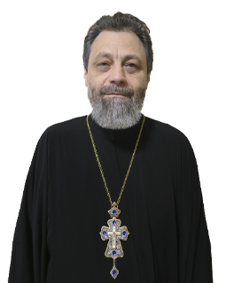
Протоиерей
Сергий Демьянов
Настоятель Храма в честь Преображения Господня в селе Спас-Загорье
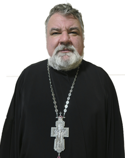
Протоиерей
Димитрий Моисеев
Настоятель Храма в честь равноапостольных князя Владимира и княгини Ольги
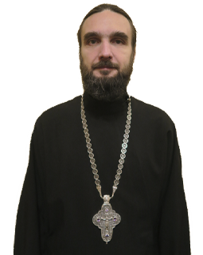
Протоиерей
Георгий Кривенко
Штатный клирик Храма в честь мучениц Веры, Надежды, Любови и матери их Софии
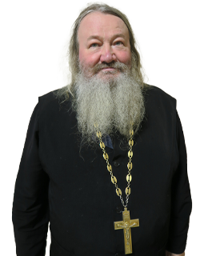
Протоиерей
Павел Середин
Настоятель Храма в честь великомученика и целителя Пантелеимона
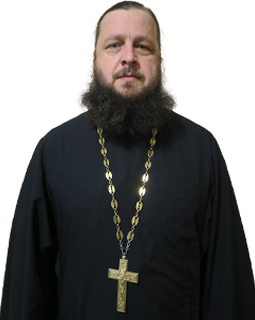
Протоиерей
Сергий Балахонов
Штатный клирик Храма в честь равноапостольных князя Владимира и княгини Ольги
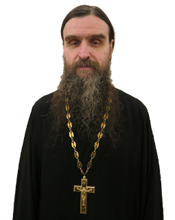
Протоиерей
Владимир Войтов
Штатный клирик Храма в честь Рождества Христова
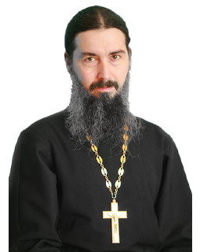
Иерей
Виталий Шатохин
Штатный клирик Храма в честь Рождества Христова
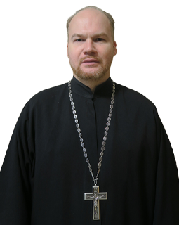
Иерей
Павел Кузнецов
Настоятель Храма в честь Спаса Нерукотворного при казачей общине "Спас", клирик храма в честь святителя Тихона, патриарха Москавского и всея Руси
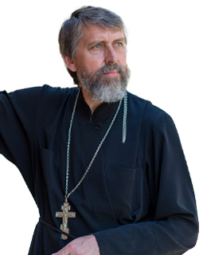
Иерей
Игорь Мартынов
Настоятель Храма в честь Луки архиепископа Крымского и Симферопольского
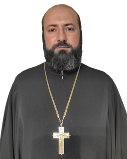
Иерей
Алексий Паршилкин
Настоятель Храма в честь благоверных князя Петра и княгини Февронии
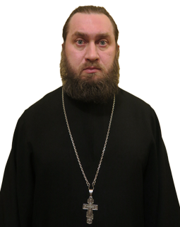
Иерей
Евгений Кандыбин
Штатный клирик в ;честь мучениц Веры, Надежды, Любови и матери их Софии
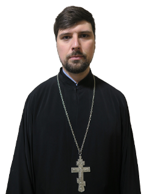
Иерей
Борис Титов
Штатный клирик Храма в честь Рождества Христова
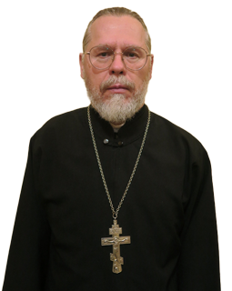
Иерей
Александр Сорокин
Штатный клирик Храма в честь мучениц Веры, Надежды, Любови и матери их Софии
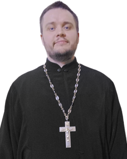
Иерей
Ярослав Чайкин
Штатный клирик Храма в честь Преображения Господня в селе Спас-Загорье
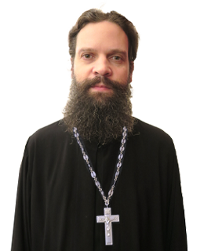
Иерей
Димитрий Шатов
Штатный клирик Храма в честь Рождества Христова
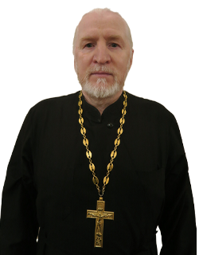
Протоиерей
Александр Пономарев
Штатный клирик Храма в честь Рождества Христова